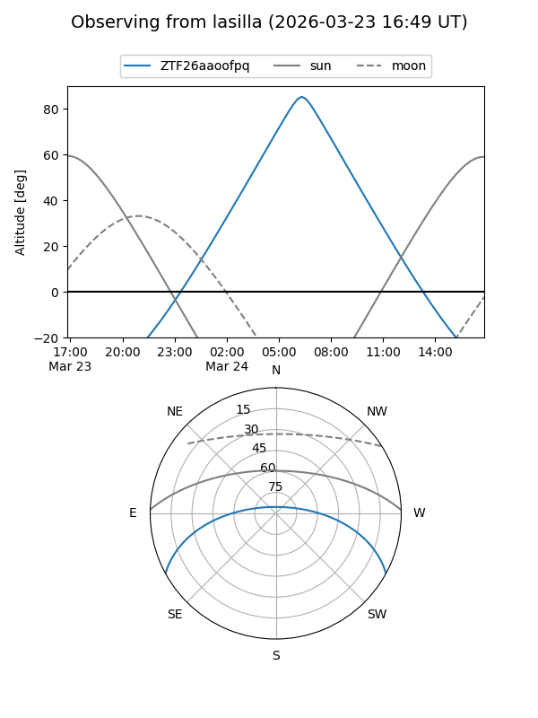
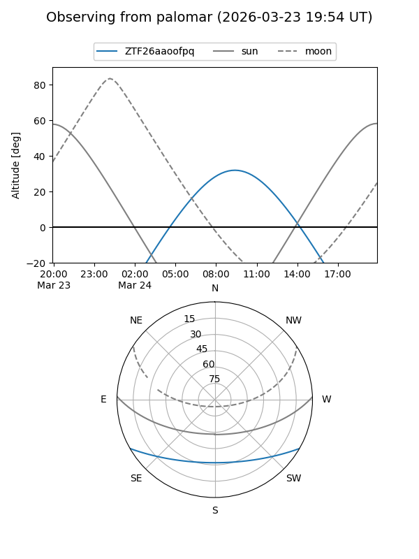

ZTF26aaoofpq
Target ZTF26aaoofpq at 2026-03-24 10:19
Aliases and brokers:
FINK: link
Lasair: link
ALeRCE: link
alt names
ZTF26aaoofpq (ztf,fink_ztf)
Coordinates:
equatorial (ra, dec) = 205.5023,-24.51014
equatorial (HMS+DMS) = 13:42:00.56,-24:30:36.50
galactic (l, b) = (317.3602,+36.94068)
Flags:
Photometry:
last ztfg=18.27
1 ztfg detections
Lightcurve
Visibility


Additional plots